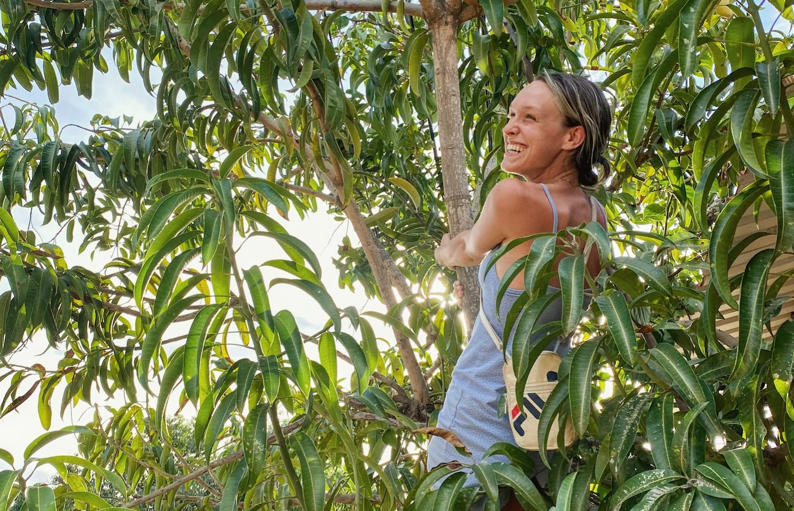
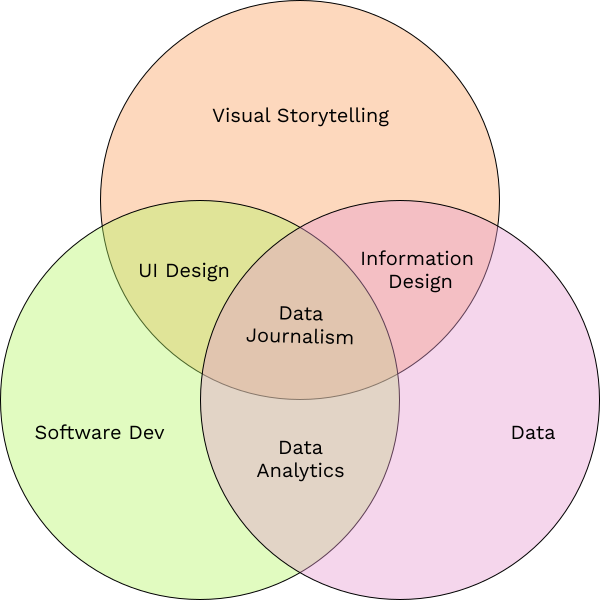

Arden Davis

Interactive Designer + Developer
When I was younger I loved singing with my sisters. With each voice added from our choir of four, the narrative of songs we heard on the radio became both stronger and more beautiful.
Now as a developer and designer, I have fallen in love with the harmony that data introduces to storytelling: strengthening it, adding beauty, and deepening meaning.
I recently graduated from The Georgia Institute of Technology with a B.S. in Computational Media and have provided clients with digital branding materials, data visualizations, and front-end web design services.
Encouraged by the trend of data journalists making order out of chaos with elegant maps and charts through interactive storytelling formats, I am intent on bringing more data into my storytelling. The responsibility I feel in creating a more informed public compels me to contribute to journalism and information design.
I created this graphic to help me navigate and combine the fields I’m interested in.
Contact me at ardendavis2 [at] gmail [dot] com